Subtheme: Corporate Landlords & Evictions
Overall Analysis Questions
- Where are the group housing units and institutions located in Boston?
- Rationale: Looking at the available census data, I saw there were various types of group and institutional housing, e.g. juvenile detention centers, nursing homes, and other (including homeless shelters and group homes). Although a grew up in Portland, OR, a city with a major homelessness crisis, I realized that I don't really know where resources like homeless shelters are located, so I wanted to learn more about this aspect of Boston.
-
How have corporate ownership rates and owner occupancy rates changed over time in Boston?
- Rationale: I moved to the Boston area from Seattle, a city which has increasingly become a tech hub over the past decade. I, too, was a tech worker, and lived in the Downtown area among the many relatively new offices of Amazon, Apple, and Meta. However, from the articles I read and from personal experience, I know that this process of corporatization can lead to increased cost of living and higher rates of evictions. I wanted to understand how the story of corporate ownership had played out in Boston over the past two decades.
- How are corporate ownership rates and owner occupancy related to each other?
- Rationale: Corporate ownership and owner occupancy are both factors that can impact eviction rates, although in opposite directions. The articles talked about the relationship between each of these factors and eviction rates, but I wanted to learn more about how they related directly to each other.
- What does the demographic distribution of Boston look like?
- Rationale: Both of the articles I read talked about how evictions disproportionately effect majority non-White neighborhoods. I thought that exploring the demographic distribution of the city would provide useful groundwork for future investigations, and also help familiarize me with the lay of the land.
Exploratory Analysis
Datasets:
- Census and Corp Ownership and Occupancy Over Time. This file contains information about owner occupancy and corporate ownership by year (2004 to 2024) for 21 neighborhoods in Boston (available here), as well as census data "aggregated to approximate Boston neighborhood boundaries" from the year 2020 (available here). The census data contains demographic information like age and race, as well as housing information like number of total housing units and number of vacant units.
- Boston Neighborhood Zipcodes. This file contains a list of boston neighborhood names and their corresponding zipcodes.
- Zip Codes. This is a geojson I downloaded from "Analyze Boston" (available here), which maps polygons (representing different neighborhoods) to their corresponding zipcodes and neighborhood names.
- Boston geojson. This is a geojson I downloaded from GitHub, which maps polygons to neighborhood names (reason for the use of this second geojson is explained in the Visualizations section).
Use of Generative AI:
I used generative AI to help me with Tableau commands (e.g. how to make a particular graph, or how to restructure a table) and web development (e.g. how to create a smaller subtitle).
Visualizations:
My first step was to open my data in Tableau, and start exploring some of the values. I quickly observed that most of the data did not vary by year:
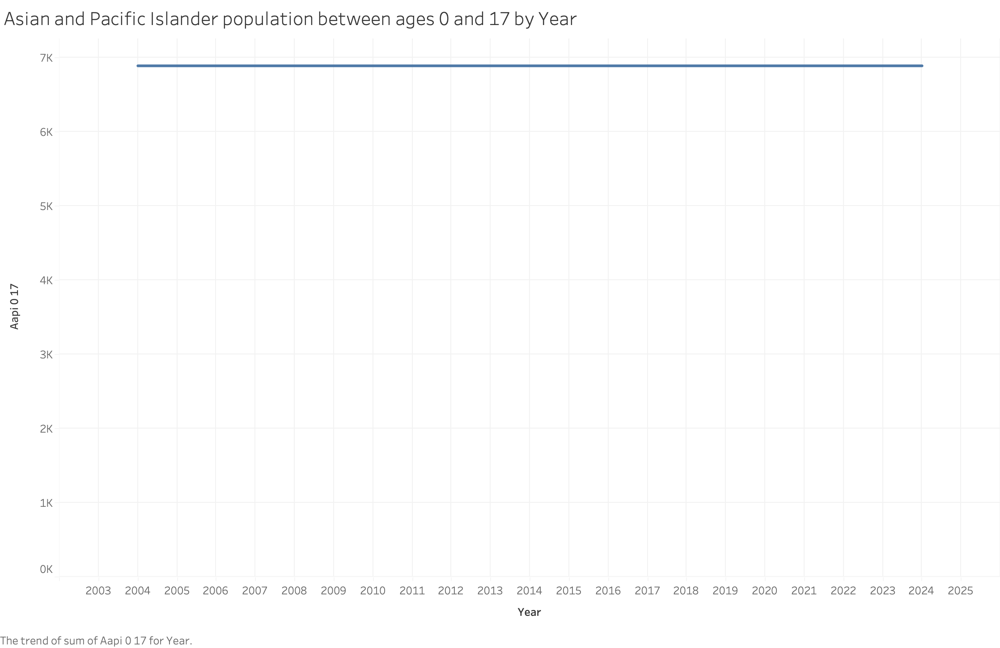
When I looked at the associated metadata file, this confusion was resolved, as I saw that the population data is just gathered from a single census in 2020. These fixed values have been spread across all years (2004 to 2024). From this observation, I realized that I would not be able to answer questions about changes in demographics over time. However, I still had neighborhood-level spatial data, and temporal data for ownernship.
Utilizing the spatial component of the data, I looked at different subpopulations grouped by neighborhood. For example, "college" vs "neighborhood" is shown below. "college" indicates individuals living in college or university housing.
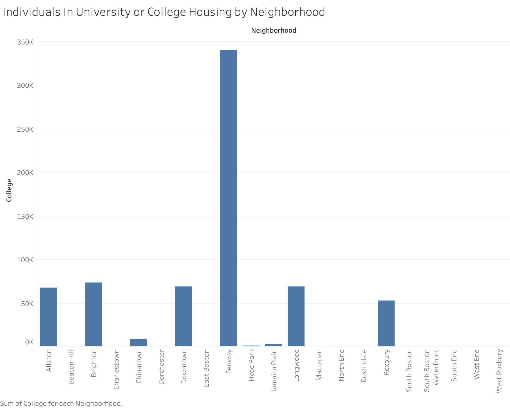
From this, I could see that many neighborhoods had 0 individuals living in college housing, while the majority of individuals in college housing seemed to be in Fenway. This spiky distribution seems makes sense since college housing will likely be near the college, not spread evenly throughout the city. A bit of Googling told me that Boston University and several other colleges have housing in Fenway. The neighborhood where I live is not included since it's in Cambridge not Boston, but I did learn that Charlestown is part of Boston despite being on this side of the river!
Next, I saw that some columns in the data were related to each other. For example, We have "Aapi 0 17" "Aapi 18Plus", and Aapi All". The first two are subsets of the last one, but they were all presented in a flattened manner. Additionally, the two pieces of demographic information, age and race, were being bundled together. I describe how I restructured the data using pivot tables to make it easier to work with in the Investigate Questions section.
After exploring a few demographic fields, I took a look at the temporal ownership data:
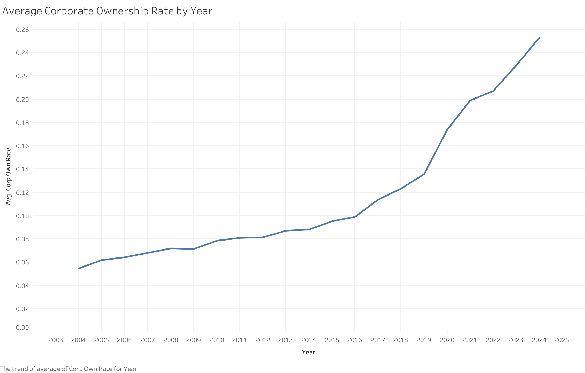
As we can see, corporate ownership rates have greatly increased since 2004. This trend will be broken down in more detail in the Investigation Questions section.
Having looked at a few fields via bar and line charts, I was excited to use my geojson data and actually see how things looked on a map of the city. I created a new plot, and colored it using average corporate ownership rate per neighborhood.
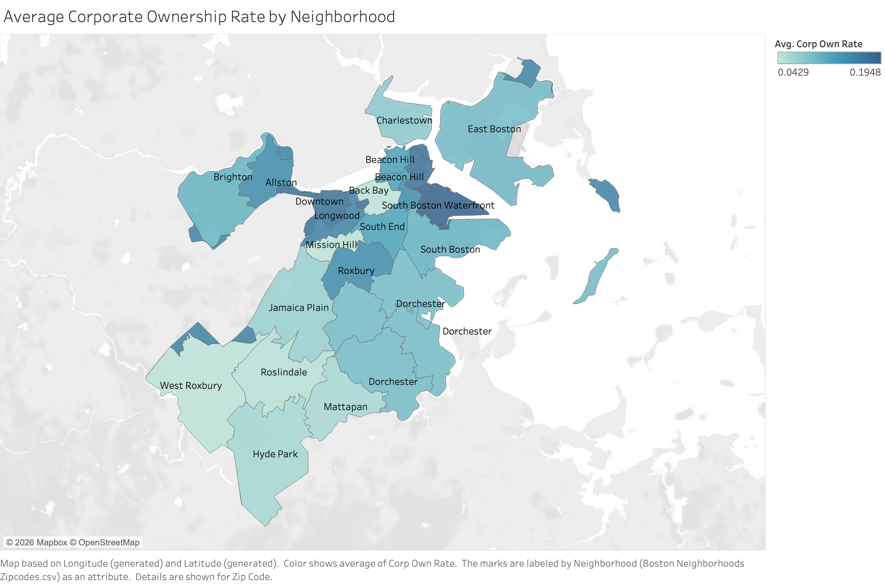
Averaging across all years flattened the temporal aspect of the data, but despite this I could see that some neighborhoods had a higher average rate of corporate ownership than others. For example, the Waterfront and Downtown were a darker blue. Looking at this map, I also realized that my geojson data had some extra nieghborhoods that didn't seem to match up with a name. These neighborhoods are shown in the map below.
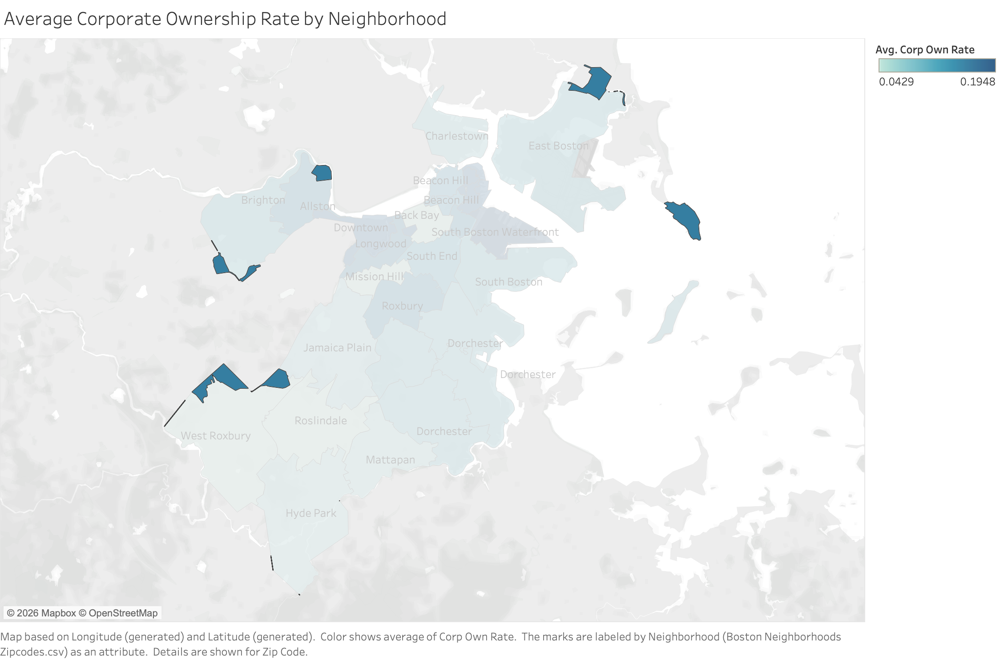
At this point, I was mapping from ownership and census data to Boston Neighborhoods and Zipcode data to zipcode-based geojson data, so things were a little confusing. To diagnose my issue, I tried looking at these neighborhoods in a different way by comparing our corporate ownership rate data to the neighborhoods from the Boston Neighborhoods and Zipcode data.
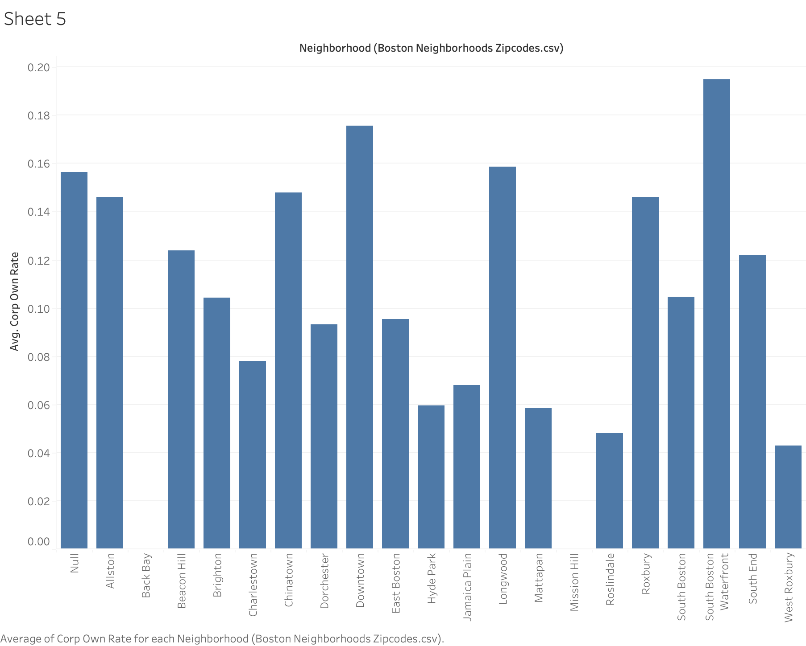
From this, I could see that there were two neighborhoods present in this file that are not present in our census and corporate ownership file, namely Back Bay and Mission Hill. I also recalled Fenway from my previous visualization and saw that it was missing - or rather, appeared to have been folded into "Downtown" (judging by the map). Overall, I could see that the two data files were not exactly aligned in how they determined neighborhoods. To address this, I located a different geojson which mapped directly to neighborhood names so that we wouldn't have to go through the "middle man" of the Boston Neighborhoods and Zipcode data.
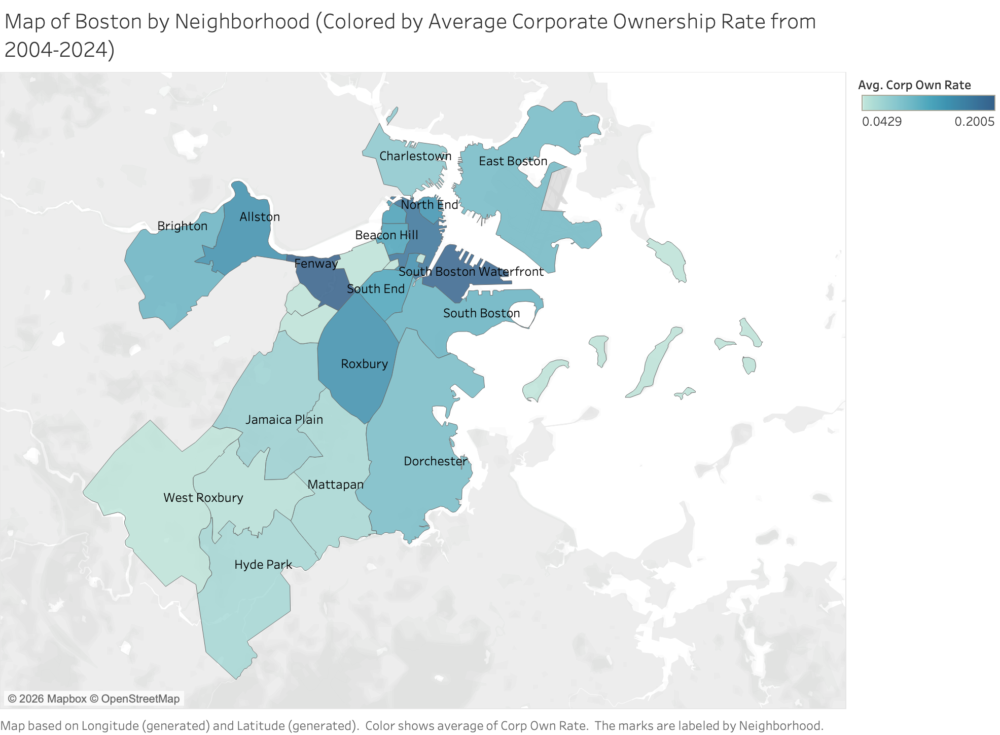
My new geojson data also had some additional neighborhoods that were not present in the census and corporate ownership file (like the previous geojson, this one also had Back Bay in addition to several others) but in future map visualizations, I simply filtered out the neighborhoods that are not present in our census data file. However, I think there are still questions worth exploring here. For example, it's very possible that "Back Bay" simply got folded into "Downtown" in the census data, which is something we would need to figure out to create a truly accurate map.
Investigate Questions
At this point, I decided it was time to start investigating my questions. My first question was
"Where are the group housing units and institutions located in Boston?"
I decided to start simple, and just look at how corporate ownership rates varied by neighborhood over time.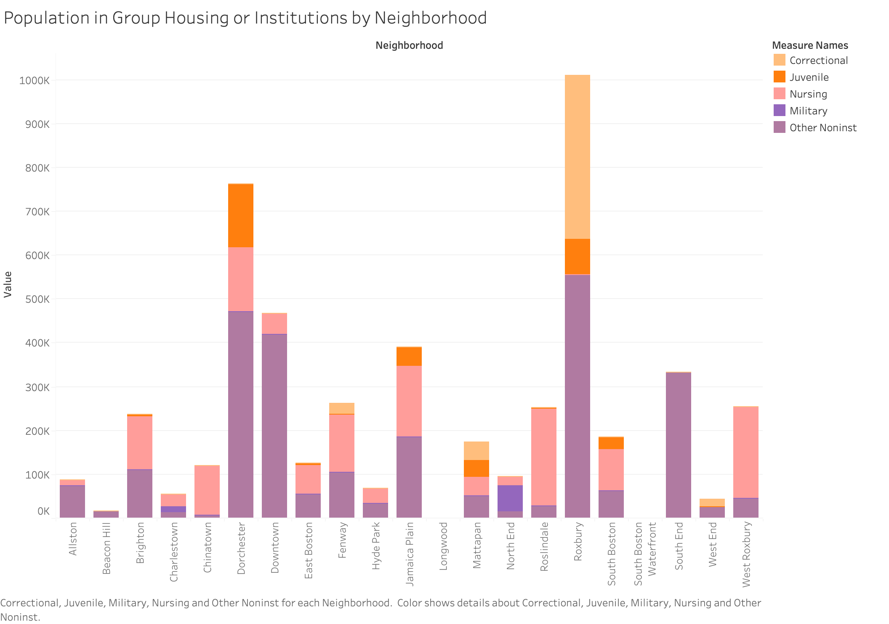
For my next question,
"How have corporate ownership rates and owner occupancy rates changed over time in Boston?"
I decided to start simple, and just look at how corporate ownership rates varied by neighborhood over time.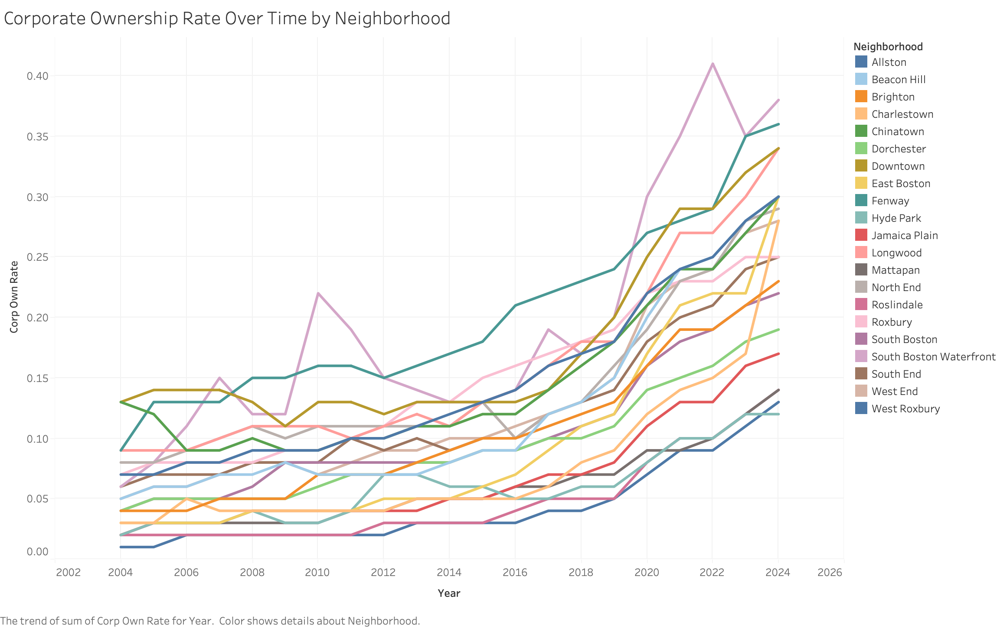
As we can see, corporate ownership rates have greatly increased in many neighborhoods. However, because there are a lot of neighborhoods it's a bit hard to see the details. I started thinking about how to make my question more specific, and consequently refine our visualization. We can see that rate went up for many neighborhoods, but for which did it increase the most from 2004 to 2024? I created a new computed field by dividing the rate in 2024 by the rate in 2004, and created a bar chart (not included here). However, this chart only showed relative increase - I also wanted to see the absolute rate of corporate ownership in 2024. That led me to the following dual-axis chart:
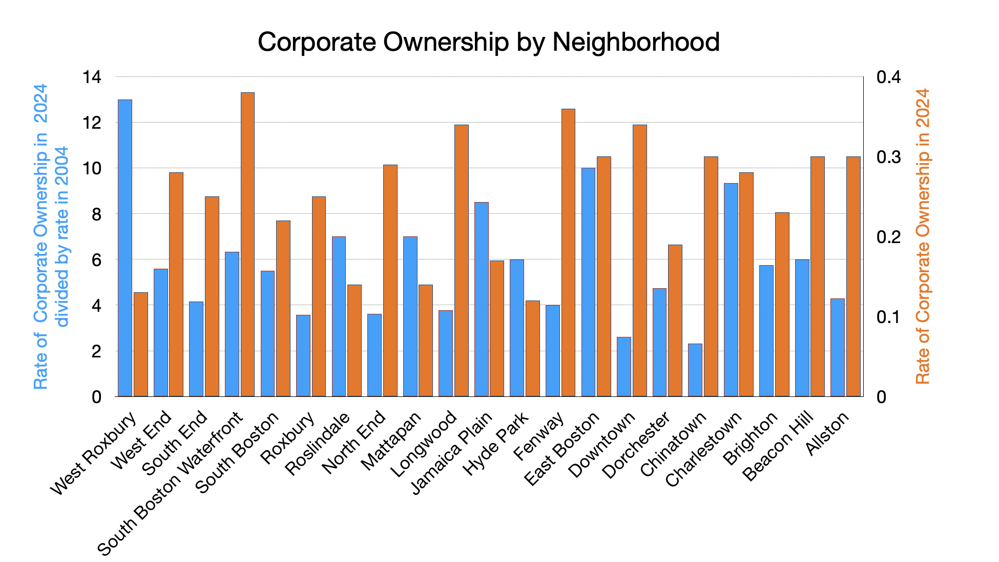
West Roxbury seems to have had the highest relative increase in rate of corporate ownership, with the rate in 2024 being more than 12 times the rate in 2004. Despite this, however, it still had one of the lowest absolute rates in 2024. The highest absolute rate of corporate ownership in 2024 belonged to the South Boston Waterfront. Dorchester had one of the lower rates of corporate ownership and hadn't changed much over time, while Chinatown had an intermediate rate in 2024 and had changed the least since 2004. Personally, I find this chart easier to read than Figure 8, but we do lose some of the nuance, e.g. how rates have bounced up and down over time.
As an an experiment in how we might keep both temporal and spatial nuance while remaining easily interpretable, I also played around with animation:
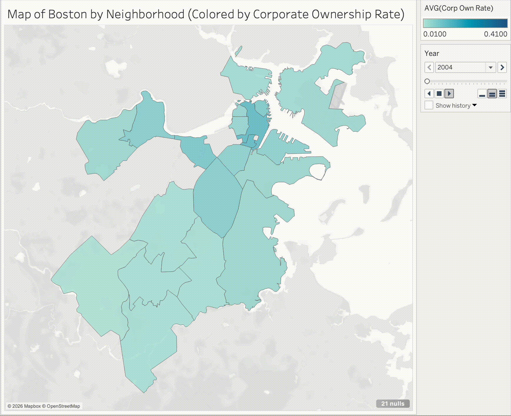
The map stays pretty light blue until 2018, at which point it seems like corporate ownership rates increase rapidly.
Having looked at corporate ownership rates a few different ways, I went on to investigate owner occupancy rates. First, I created a line plot similar to Figure 8:
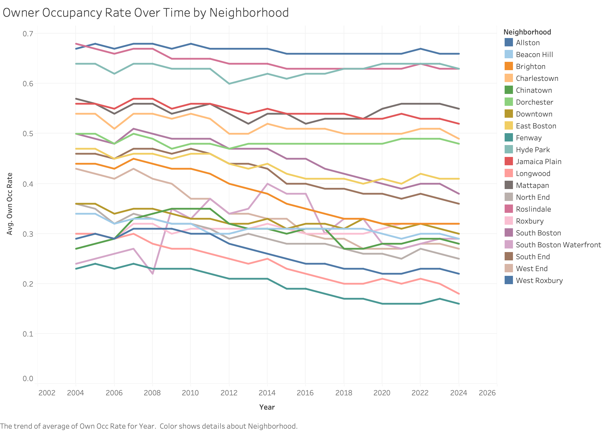
These trend lines look a lot more flat than the corporate ownership lines. Some neighborhoods like Brighton droped from ~0.4 to ~0.2, but some, like Allston, barely changed at all. For my second question,
"How are corporate ownership rates and owner occupancy rates related to each other?"
I wanted to explore the relationship between the two fields. I compared the values from 2024 in a scatterplot: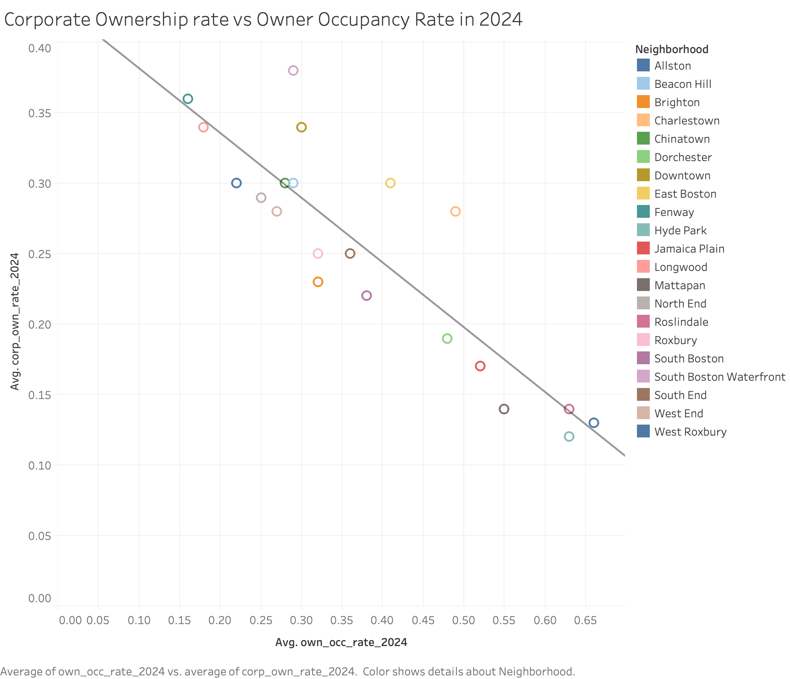
Viewing the data this way (as opposed to two line charts) makes the relationship between these fields much clearer. We actually do see a strong correlation between the two rates: The R-squared value of the trendline is 0.77, with p < 0.0001. We can see that the slope of the trendline is negative, meaning that as owner occupancy rate increases, corporate rate decreases. This makes some intuitive sense, since more local owners means less property for corporate owners and vice versa. According to the Housing Justice Beyond the Emergency page, number of evictions tend to increase with corporate ownership rates, and decrease with owner occupancy rates, so it will be interesting to dig into this relationship in future explorations.
Finally, I moved on to question three:
"What does the demographic distribution of Boston look like?"
As I mentioned earlier, information about race and age had been flattened in the data so, for example, counts of people identifying as Hispanic and 18+ would be one column, while Asian Americans and Pacific Islanders aged 0-17 would be another. Total population also had three columns (0-17, 18+, and all). This made it somewhat hard to visualize demographic data on the same graph. Consequently, I selected all rows containing age and race information, and created a pivot table. I then created two calculated groups (race and age) by splitting the combo names (e.g. "white_all" into "white" and "all"). I then created a hierarchy of age under race, so I could see the different age group counts within each race. Lastly, I filtered out the "total" group and the "all" column per group to get the following visualization: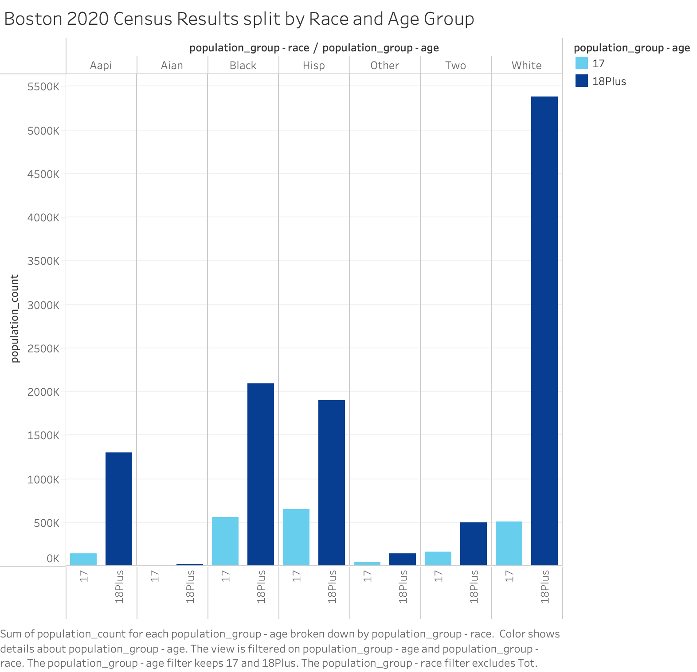
As we can see from this figure, there were a lot of White adults in Boston in 2020. This was by far the largest bar in the chart. Interestingly, counts of individuals aged 0-17 were more evenly distributed between races, with slightly more Black and Hispanic children than White children. Perhaps this points towards a trend in the shifting demographic composition of the city over time (see Facing History and Ourselves). The linked page notes that in 2020, about 45% of Bostonians identified as White. Since we have the 2020 census data, we can verify that this claim plays out in our data.
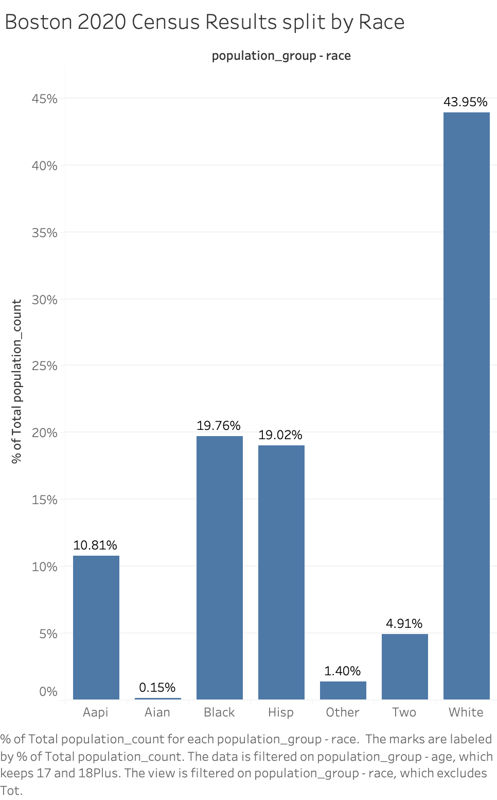
Indeed, we see this checks out. While White was the largest single race in 2020, it was actually in the slight minority overall. We see that Black and Hispanic populations are the second largest, and American Indian / Alaska Natives are the smallest.
Next, I wanted to reintegrate our spatial data and see how demographics were distributed across the city. I created a new computed field which gave the fraction of BIPOC residents per neighborhood (out of total residents per neighborhood), and then applied it to our map. This graphic was inspired by the one in the NYT article from the readings,In 83 Million Eviction Records, a Sweeping New Look at Housing in America which overlayed eviction data on a map showing the neighborhoods of Richmond with majority White neighborhoods were highlighted in yellow.
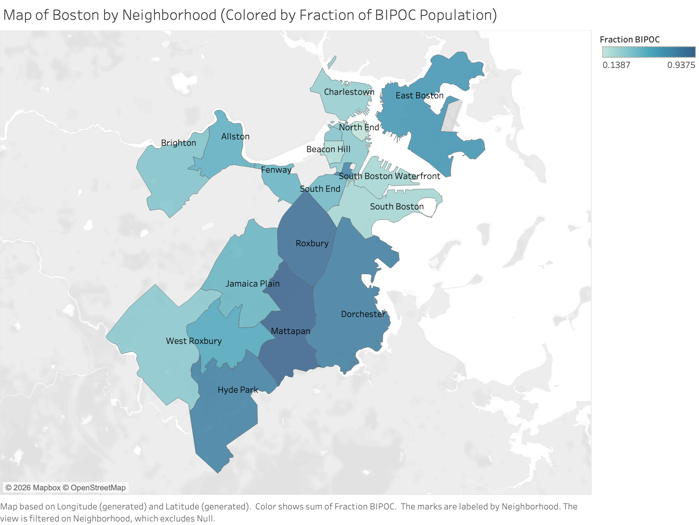
Again, we can Google to see if this checks out. Based on Statistical Atlas, it seems like our numbers are reasonable. Next, I wanted to see how age was distributed across the city. I created another computed field showing fraction of neighborhood population between ages 0-17, and applied it to our map.
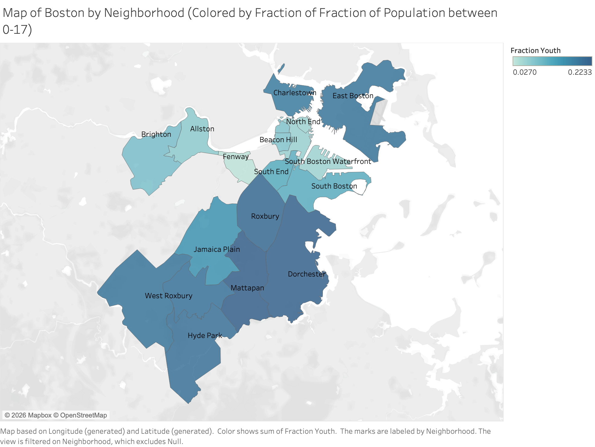
These two visualizations add more depth to our earlier observation that a large part of the Boston population consisted of White adults. Looking at our maps, we can see some area (Beacon Hill, Downtown, North End, South Boston Waterfront, etc.) have a high concentration of White adults. Other neighborhoods, like Hyde Park, Mattapan, and Roxbury, are the opposite. We can also see where the maps differ. For example, West Roxbury has a minority of BIPOC, and a relatively high fraction of youths. This visualization feels more informative and connected to the city than the earlier bar charts were.
We can also compare the demographic maps to a map of corporate ownership
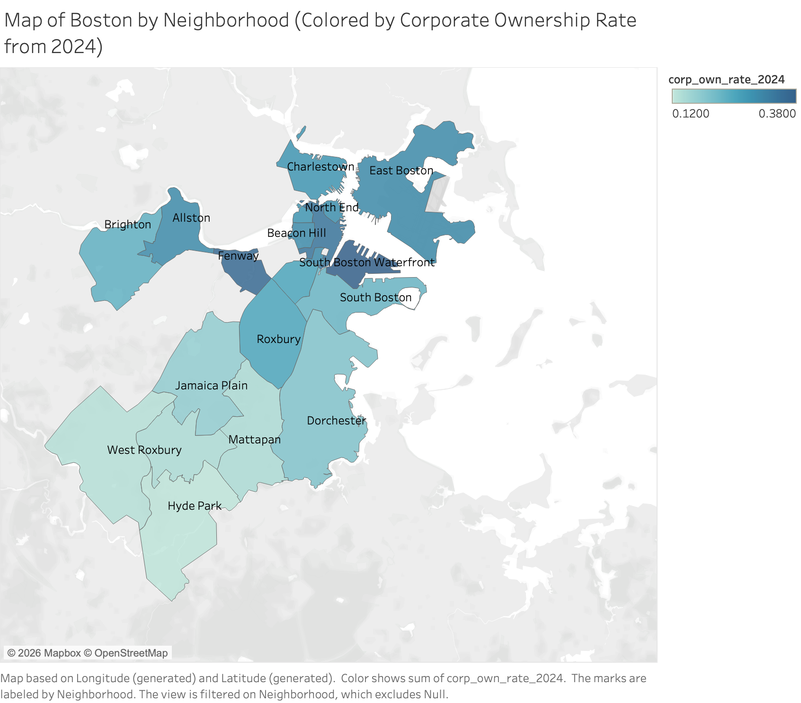
and owner occupancy rates in 2024:
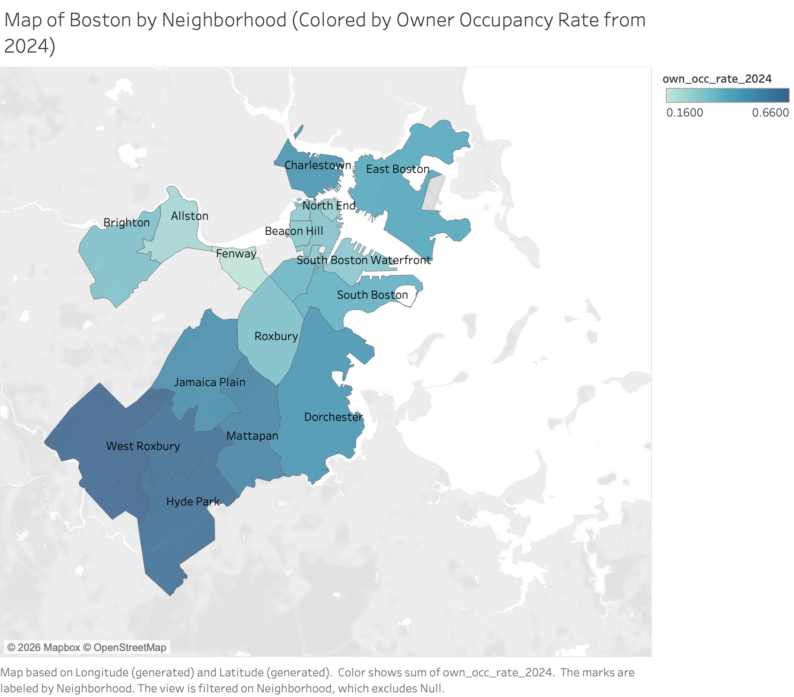
As we might expect from the negative trendline in Figure 12, Figures 17 and 18 look quite different from one another. West Roxbury, Hyde Park, and Mattapan have relatively low corporate ownership rates and high owner occupancy rates. Fenway and South Boston Waterfront show the opposite pattern. Comparing our various maps, it looks like Mattapan has a high concentration of BIPOC residents, as well as low corporate ownership and relatively high owner occupancy rate. As the readings noted, majority non-White neighborhoods tend to suffer from disproportionately high eviction rates, but neighborhoods with lower corporate ownership and higher owner occupancy tend to have fewer evictions. When we extend this exploration with the addition of eviction data in the future, we can see whether these factors are protective for the Mattapan population or not.
Summary
We first investigated how corporate ownership and owner occupancy rates have changed over time. We observed that corporate ownership rate has gone up a lot from 2024, with some areas experiencing as high as a 12x increase, with the lowest rate still above 2x (more than 100% increase from 2004 to 2024). Owner Occupancy rate went down a little, particularly for a few neighborhoods like Brighton, but generally stayed steadier. When we visualized the 2024 corporate ownership rate and the 2024 owner occupancy rate together, we saw a strong negative correlation between the two. We then took a deeper dive into the city's demographics, and saw that while White adults constitute the largest single population, Boston's youth are more diverse. We also visualized the distribution of demographics across neighborhoods on our map. Lastly, we combined our two main directions of exploration (corporate ownership / owner occupancy and demographics) by comparing the maps of corporate ownership and owner occupancy rates with the maps of demographic data. Outside of my actual findings, I also took away a few lessons about keeping things simple (my headache with the chain of census data to neighborhood+zipcode to geojson), and the utility of restructuring data for easier analysis. As a new transplant to the Boston area, I really enjoyed learning more about the city through this data exploration. I also got to learn more about the capabilitys of Tableau, which was fun.